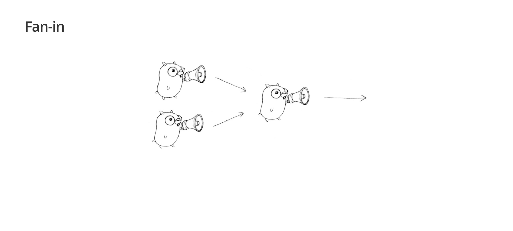
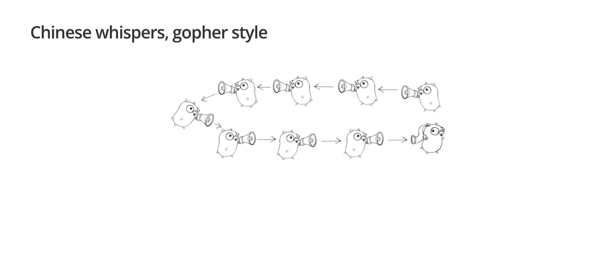

大家好，我是江湖十年。
今天继续 Go 并发模式系列。这次要整理的，是 Rob Pike 在 2012 年 Google I/O 上的演讲《Go Concurrency Patterns》。内容从最基础的 goroutine 和 channel 讲起，一步步构造出生成器、扇入、超时、退出等常见模式，最后用一个简化版的 Google 搜索把这些模式串了起来。
本文根据演讲 PPT 和视频整理，逐页讲解其中的内容。
演讲视频：https://www.youtube.com/watch?v=f6kdp27TYZs
演讲 PPT：https://go.dev/talks/2012/concurrency.slide
为什么要支持并发？
Go 语言刚公布时，很多人对它内置的并发特性很感兴趣。Rob Pike 在开头抛出了一连串问题，为什么要支持并发？到底什么是并发？这个想法从哪儿来？它适合用来做什么？又该怎么用？
他先回答了”为什么”。看看周围的世界，你看到的是一个一次只做一件事、单步前进的世界，还是一个由许多相互独立、各自行动的部分组成的复杂世界？答案显然是后者。顺序处理本身并不能描述世界的行为，这就是 Go 要支持并发的原因。
并发不是并行
接下来是定义。并发（concurrency）是独立执行的计算的组合，是一种组织软件结构的方式，尤其适合用来写出与真实世界良好交互的清晰代码。
但并发不是并行（parallelism）。并发不等于并行，尽管并发能够带来并行。如果只有一个处理器，程序仍然可以是并发的，但无法并行执行；反过来，一个写得很好的并发程序，在多处理器上可能高效地并行运行。
Rob Pike 强调，这套模型的目标是易理解、易使用、易推理，你不需要成为并发专家。与直接处理线程、信号量、锁、屏障（barrier）等并行细节相比，这种方式要舒服得多。
并发特性的历史
Go 的并发特性看起来很新颖，其实有着很长的历史渊源，可以追溯到 1978 年 Hoare 提出的 CSP，甚至可以追溯到 1975 年 Dijkstra 的守卫命令（guarded commands）。
具有类似特性的语言包括：
- Occam（May，1983）
- Erlang（Armstrong，1986）
- Newsqueak（Pike，1988）
- Concurrent ML（Reppy，1993）
- Alef（Winterbottom，1995）
- Limbo（Dorward、Pike、Winterbottom，1996）
Go 是 Newsqueak-Alef-Limbo 这条分支上的最新成员，其区别性特征是一等公民的 channel。Erlang 更接近最初的 CSP，它通过进程名与进程通信，而不是通过 channel 通信。两种模型是等价的，只是表达方式不同。一个粗略的类比是，按文件名写文件（进程，Erlang）对比按文件描述符写文件（channel，Go）。
一个无聊的函数
为了展示并发原语的特性，需要一个例子。为了避免分散注意力，Rob Pike 选了一个无聊的例子：
1 | func boring(msg string) { |
这个函数会永远运行下去，像一个无聊的派对客人。稍微不那么无聊的版本，是让消息之间的间隔变得不可预测，但仍然不超过一秒：
1 | func boring(msg string) { |
直接调用 boring("boring!")，主函数就再也回不来了。加上 go 关键字则完全不同：
1 | func main() { |
go 语句会照常运行函数，但不会让调用者等待，它启动了一个 goroutine。这个功能类似于 shell 命令末尾的 &。不过，当 main 返回时，程序就退出了，boring 函数也会随之结束，所以屏幕上什么也看不到。我们可以让主函数多待一会儿：
1 | func main() { |
这样就既能证明主函数和启动的 goroutine 都在运行，又能看到 boring 的输出。
goroutine 是什么
goroutine 是由 go 语句启动的、独立执行的函数。它有自己的调用栈，栈会按需增长和收缩。它非常轻量，一个程序里同时存在几千个甚至几十万个 goroutine 都是实际可行的。它不是线程。一个只有几千个 goroutine 的程序，可能只有一个线程。goroutine 会在需要时被动态多路复用到线程上，以保证所有 goroutine 都能运行。不过，如果你把它想象成一个非常廉价的线程，也不会差太远。
真正的通信需要 channel
前面的例子其实作弊了。主函数看不到另一个 goroutine 的输出，那些内容只是打印到屏幕上，我们假装看到了一场对话。真正的对话需要通信。
Go 中的 channel 在两个 goroutine 之间提供连接，让它们能够通信。声明和初始化 channel 的方式如下：
1 | // Declaring and initializing. |
向 channel 发送值：
1 | // Sending on a channel. |
从 channel 接收值，箭头指示了数据的流动方向：
1 | // Receiving from a channel. |
用 channel 把 main 和 boring 连起来之后，两者就能通信了：
1 | func main() { |
这里有一个关键点。当 main 执行 <-c 时，它会等待有值被发送过来；同样，当 boring 执行 c <- value 时，它会等待接收方准备好。发送方和接收方必须都准备好，才能完成这次通信，否则就会一直等待。因此，channel 既通信又同步。
顺便提一下带缓冲的 channel。缓冲区会移除同步，让 channel 更像 Erlang 的邮箱（mailbox）。带缓冲的 channel 对某些问题很重要，但推理起来更微妙，这里没有用到。
译注：Erlang 的 mailbox 是每个进程自带的消息队列，其他进程发来的消息会先进入这里，再由进程通过
receive取出。
由此可以引出 Go 的核心哲学：
Don’t communicate by sharing memory, share memory by communicating.
不要通过共享内存来通信，而要通过通信来共享内存。
模式一：生成器
有了这些原则，就可以开始看并发模式了。Rob Pike 特意给”模式”加了引号，因为这里说的并不是面向对象意义上的设计模式，而只是一些简单却能做有趣事情的小例子。
第一个、可能也是最重要的并发模式叫生成器（generator），也就是返回 channel 的函数。channel 和字符串、整数一样，是一等公民的值。
1 | c := boring("boring!") // Function returning a channel. |
1 | func boring(msg string) <-chan string { // Returns receive-only channel of strings. |
返回值类型 <-chan string 表示一个只能接收的 channel，因为调用方只会从它里面读值。goroutine 不再由 main 启动，而是在 boring 函数内部启动。从外部看，这只是一个调用后返回 channel 的函数；在内部，它已经启动了一个并发运行的计算。
这也意味着 channel 可以作为服务的句柄（handle）。我们可以创建同一种服务的多个实例：
1 | func main() { |
Joe 和 Ann 会按同样的节奏轮流说话。但这是因为 channel 的同步特性，两者不仅在打印时轮流，在执行时也会轮流。如果 Ann 准备好发送，而 Joe 还没发送，Ann 就会阻塞，等待把值交给 main。这可能有点烦人，也许 Ann 比 Joe 更健谈，并不想等 Joe。
模式二：扇入（fan-in）
解决办法是写一个扇入函数，也就是多路复用器（multiplexer），把两个输入合并成一个输出 channel：

图片来自 Rob Pike 2012 演讲 PPT。
1 | func fanIn(input1, input2 <-chan string) <-chan string { |
1 | func main() { |
fanIn 函数本身也遵循生成器模式，它接收两个 channel，返回另一个 channel。内部启动两个独立的 goroutine，一个把 input1 的数据复制到输出，另一个把 input2 的数据复制到输出。这样 Joe 和 Ann 就完全解耦了，谁准备好谁就先说话，不再需要步调一致。
模式三：恢复顺序
如果反过来，就是想让两者严格同步呢？前面说过，channel 是一等公民的值，这意味着可以把 channel 放在 channel 上发送。我们可以定义一种消息类型，里面包含一个用于回复的 channel：
1 | type Message struct { |
主循环先接收所有消息，然后再通过各自的私有 channel 放行：
1 | for i := 0; i < 5; i++ { |
这个 wait channel 在所有消息之间共享：
1 | waitForIt := make(chan bool) // Shared between all messages. |
每个说话者在发送消息时，会带上这个等待 channel，然后阻塞等待放行信号：
1 | c <- Message{ fmt.Sprintf("%s: %d", msg, i), waitForIt } |
这样一来，即使各个 goroutine 的执行时机是随机的，主循环也可以通过控制放行顺序，让它们重新回到步调一致的状态。
select 语句
接下来是并发独有的控制结构，也是 channel 和 goroutine 被内建到语言中的原因，这就是 select 语句。
select 看起来像 switch，但每个 case 不是表达式，而是一次通信：
1 | select { |
它的规则可以概括为：
- 所有 channel 都会被求值。
select会阻塞，直到其中某一次通信可以执行，然后执行该 case。- 如果多个 case 同时可以执行，
select会伪随机地选择一个。 - 如果存在
default子句，那么没有任何 channel 就绪时，它会立即执行。
default 提供了非阻塞通信的能力。如果没有 default，select 会一直阻塞，直到某个 channel 可以通信。
用 select 重写 fanIn，只需要一个 goroutine：
1 | func fanIn(input1, input2 <-chan string) <-chan string { |
之前是启动两个 goroutine，各自负责一个输入 channel；现在只启动一个 goroutine，在循环里用 select 选择哪个输入已经就绪。行为完全一样，只是实现方式不同。
超时
select 最重要的用途之一是给通信加超时。如果对方太无聊，你大概不想一直等下去：
1 | func main() { |
time.After 会返回一个 channel，在指定时长之后向该 channel 投递一次当前时间。上面这段代码的意思是，要么从 Joe 那里收到一条消息，要么一秒过去后放弃等待。这里的超时是针对每一条消息的。
也可以把定时器放到循环外面，让整个对话有一个总超时：
1 | func main() { |
不管 Joe 说了多少话，五秒一到，整个循环就结束。
退出与确认
除了超时，还可以主动让 Joe 停下来：
1 | quit := make(chan bool) |
boring 函数内部则多了一个 quit case：
1 | select { |
但这还不够。如果 Joe 在退出前需要做一些清理工作呢？main 返回时整个程序就结束了，也许 Joe 还需要删除临时文件。我们需要确认他已经做完。
办法是让 Joe 在完成后回一条消息：
1 | quit := make(chan string) |
1 | select { |
这是一次往返通信。我们告诉 Joe “再见”，Joe 收到后执行清理，再回复 “回头见”，主函数收到回复后才确信可以安全退出。
菊花链（daisy chain）
沿着往返通信的思路，还可以构造一条很长的链，像一群 gopher 在玩传话游戏：

图片来自 Rob Pike 2012 演讲 PPT。
1 | func f(left, right chan int) { |
每个 gopher 从右边的 channel 接收值，加一，再发送到左边的 channel。值从最右端进入，沿着链条一路传递，最后从最左端出来，一共被加了 n 次。为了好玩，实际跑过 10 万个这样的 gopher，程序链接、运行、完成所有通信所需的时间依然很短。这个例子虽然 silly，但很诚实，因为它真的创建了这么多 goroutine，并完成了完整的通信。
从玩具到系统软件
前面都是玩具例子。Go 是为编写系统软件设计的，接下来要看看这些想法如何用于真正的软件。接下来用 Google 搜索来演示，当然，这仍然是一个玩具，只是借用搜索的结构。
一次 Google 搜索背后有许多独立执行的后端，Web 搜索、图片搜索、视频搜索、地图、新闻等等，另外还有广告系统。我们要并行地把查询发给这些后端，再把答案收集起来。
先伪造一个搜索框架：
1 | var ( |
Search 是一个函数类型，接收查询并返回结果。fakeSearch 返回一个模拟搜索函数，它会随机休眠最多 100 毫秒，然后返回一个假结果。
测试框架时，记录一下总耗时：
1 | func main() { |
Google Search 1.0：串行
最初的版本最简单，依次调用 Web、Image、Video，把结果追加到切片里：
1 | func Google(query string) (results []Result) { |
每个后端最多可能花费 100 毫秒，所以总耗时可能接近 300 毫秒。问题是，程序在等第一个后端返回时，另外两个后端其实什么也没做。
Google Search 2.0：并发
把三个搜索放进 goroutine 里并发执行，再从同一个 channel 收集结果：
1 | func Google(query string) (results []Result) { |
没有锁，没有条件变量，也没有回调。三个搜索并发执行，总耗时只取决于最慢的那个后端。运行结果常常只有几十毫秒，例如 76 毫秒、88 毫秒。而且结果到达的顺序是不确定的，这正是并发的表现。
Google Search 2.1：超时
服务器偶尔会很慢。假设我们只愿意为整个搜索等待 80 毫秒，就可以把超时模式加进来：
1 | c := make(chan Result) |
这样程序一定会在 80 毫秒左右给出答案，但代价是慢服务器的结果可能被直接丢弃。
用副本避免超时
如果不想丢弃慢服务器的结果，可以复制服务器。向多个副本发送同一个请求，采用最先返回的响应：
1 | func First(query string, replicas ...Search) Result { |
First 接收一个查询和任意多个搜索副本，为每个副本启动一个 goroutine，然后只返回最先到达的结果。使用时可以这样：
1 | func main() { |
哪个副本先返回就用哪个，整体延迟因此降低。
Google Search 3.0：把所有东西拼起来
最后，把并发、副本和超时组合到一起：
1 | c := make(chan Result) |
三个后端各自有两个副本，每个后端都通过 First 取最先返回的副本结果，整体再受 80 毫秒超时保护。运行这个版本，通常都能在 80 毫秒内拿到全部三个结果。
总结
只用了几次简单的变换，我们就用 Go 的并发原语，把一个
- 慢的
- 串行的
- 对失败敏感的
程序，变成了一个
- 快的
- 并发的
- 带副本的
- 健壮的
程序。
而且整个过程依然没有锁、没有条件变量、没有回调。程序很容易理解，更重要的是，其中每个组成部分都是直截了当的顺序代码，我们只是组合了它们各自独立的执行，从而得到整个服务器的行为。这正是并发特性被加入 Go 的原因。
不要滥用
最后是一点忠告。这些东西很好玩，写第一个并发程序、观察它的行为确实很有趣，你应该动手试试。但不要过度使用。
goroutine 和 channel 是很重要的理念，是构造程序的工具，但它们不是用来替代内存屏障这类底层机制的。有时候你需要的只是一个引用计数器；当然可以用 channel 加 goroutine 来实现，但那就有点杀鸡用牛刀了。
Go 的 sync 和 sync/atomic 包提供了互斥锁、条件变量、原子操作等工具，适合解决更小的问题。很多时候，这些工具会和 goroutine、channel 配合使用，共同解决一个更大的问题。始终为任务选择正确的工具。
本文完。
希望此文能对你有所启发。
延伸阅读
- Go Concurrency Patterns 演讲 PPT：https://go.dev/talks/2012/concurrency.slide
- Go Concurrency Patterns 演讲视频：https://www.youtube.com/watch?v=f6kdp27TYZs
- Sameer Ajmani 讲透 Go 高级并发模式：泄漏、取消与并发控制：https://jianghushinian.cn/2026/11/07/go-concurrency-patterns-talk-advanced/
- Go 并发模式：Context 译文：https://jianghushinian.cn/2026/11/03/go-concurrency-patterns-context/
- Go 并发模式：Pipeline 与取消 译文：https://jianghushinian.cn/2026/11/04/go-concurrency-patterns-pipelines/
- Go 并发模式：超时，不再等待 译文：https://jianghushinian.cn/2026/11/05/go-concurrency-patterns-timeouts/
- 本文永久地址：https://jianghushinian.cn/2026/11/06/go-concurrency-patterns-talk-basics/
联系我
- 公众号：Go编程世界
- 微信：jianghushinian
- 邮箱：jianghushinian007@outlook.com
- 博客：https://jianghushinian.cn
- GitHub：https://github.com/jianghushinian